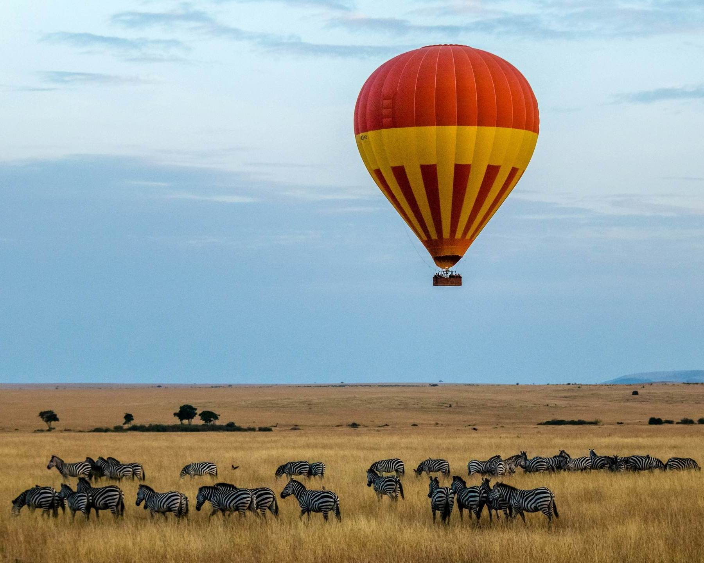

Add something memorable to any route.
Experiences sit alongside a safari, a coast stay or a city visit. Tell us what you like and we fit it in.
Time well spent between the big moments.
Add one to a trip, or build a day around it.
Sundowners
A drink as the light changes, at a spot that suits your route.
Nature walks
Slower time outdoors, with someone who knows the ground.
Village visits
Time with local people, arranged with care for those you visit.
Boat trips
A change of view from the water.
A city day
A day in the city, planned around your interests.
What each experience involves.
Details vary by place and by season. We confirm them when we quote.
Sundowners
A drink as the sun goes down, usually at a spot with a view. Inside national parks, rules about leaving the vehicle depend on the park, so we choose a place that fits the rules where you are staying.
Best added to a safari day or a coast stay.
Nature walks
Walking is not allowed in most national parks, but it is possible in some conservancies, private areas and rift valley sites, with a guide. You see smaller things you miss from a vehicle, such as tracks, insects, plants and birds.
Wear closed shoes, a hat and sunscreen.
Village visits
A visit to a local community. Go in the spirit of a guest. Ask before photographing people, follow your guide's advice and treat the visit as a conversation.
Please tell us if you want to meet a particular community or learn a particular craft.
Boat trips
Time on the water, such as on a lake in the Rift Valley or on the coast. On a lake you can watch hippos and birds from a safe distance, and at the coast, boats give another view of the shore.
Availability depends on the water level and the weather.
A city day
A day in town, such as markets, museums and local food in Nairobi. It also works well after a long flight, or on a day between two long drives.
Tell us what you enjoy so we plan around it.
Tell us, and we fit it in.
We add each experience to your route and quote it with the rest of your trip.
Tell us what you like
The things you want to do, and who is travelling.
We check what fits
We match experiences to your route, your dates and the season.
You get one quotation
Each experience is priced with the rest of your trip.
You confirm
After you confirm, we arrange everything and stay in touch.
Questions visitors ask us.
Tell us if yours is not here.
Can I add an experience after I book?
Often yes, but availability depends on the place and the date. Message us as early as you can.
Are these suitable for children?
Many are, and some have age or fitness limits. Tell us the ages of your group when you ask.
How much does an experience cost?
The price depends on the activity, the place and the size of your group. It appears as a line in your quotation.
What if the weather is bad?
Some experiences, such as boat trips, depend on the weather and the water level. If one cannot run, we will tell you and offer an alternative.
Want to add an experience?
Tell us where you are going and what you enjoy. We will suggest what fits.